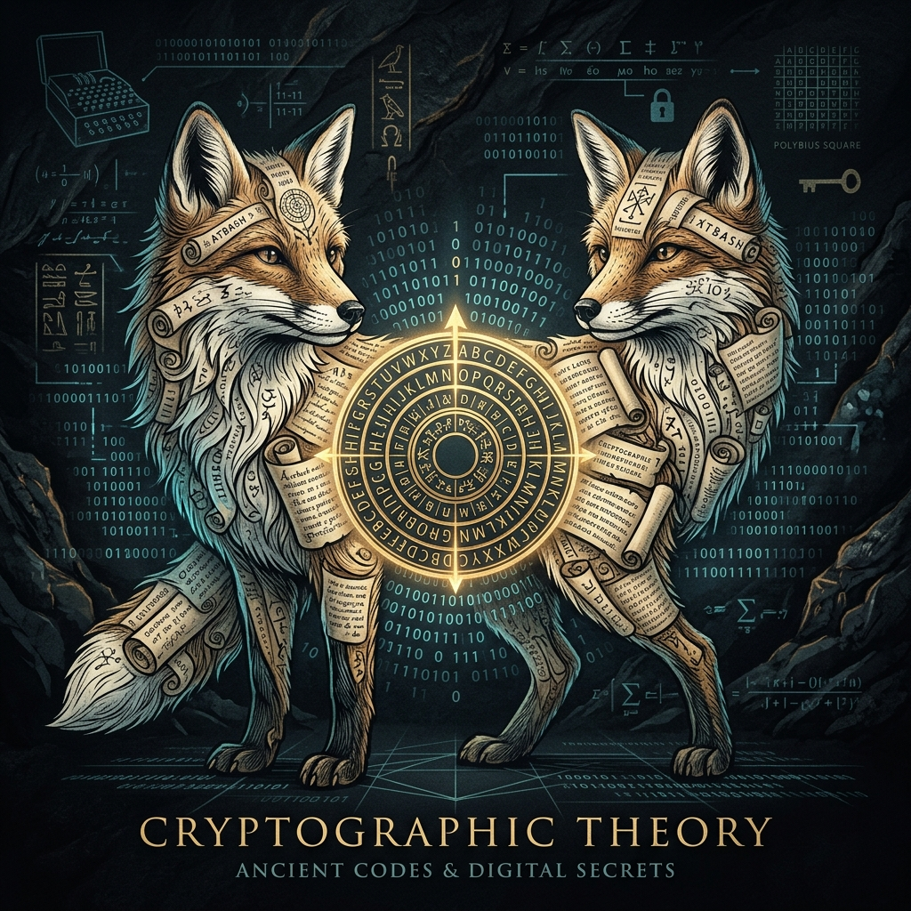

History and Fundamentals of Modern Cryptography
May 1, 2026
I. Historical Origins and Evolution
The practice of cryptography, derived from the Greek words krypto (hidden) and graphene
(writing), was born from the human need to communicate selectively and securely. Its evolution spans over
four millennia, progressing from rudimentary artistic techniques to a complex mathematical science.
-
• Ancient
Civilizations
The earliest evidence dates back 4,000 years to the Egyptian use of hieroglyphs, a secret code known
only
to scribes transmitting messages for kings. By 500–600 BC, scholars utilized simple mono-alphabetic
substitution ciphers, replacing message letters with others based on a secret rule.
-
• The Caesar Shift
Cipher
A famous Roman technique, this cipher involved shifting letters by a predetermined number—most commonly
three—so that the recipient could shift them back to retrieve the original plaintext.
-
• The Renaissance and
Mechanical Eras
During the 15th-century European Renaissance, polyalphabetic techniques like Vigenere Coding emerged,
shifting letters by variable places rather than a fixed amount. By the early 20th century, sophisticated
mechanical devices like the Enigma rotor machine provided advanced encryption for military and
government use.
-
• Modern Shift
Following World War II, both cryptography and cryptanalysis (the art of breaking ciphers) became
excessively mathematical, eventually moving from character-based manipulation to binary bit sequences as
computing arrived.
II. Fundamentals of Modern Cryptography
Modern cryptography is the cornerstone of computer security, built upon concepts from number theory,
probability, and computational complexity. Unlike classical cryptography, which relied on "security through
obscurity" (keeping the method secret), modern systems use publicly known mathematical algorithms where
secrecy is maintained solely through a private key.
The Basic Cryptosystem Model
A standard cryptosystem consists of five essential components:
- Plaintext: The original data to be protected.
- Encryption Algorithm: A mathematical process that transforms plaintext into
ciphertext.
- Ciphertext: The scrambled version of the data that flows over public channels.
- Decryption Algorithm: The process that reverses encryption to output the original
plaintext.
- Keys: Values used to seed the algorithms; these must be kept secret even if the
algorithm is public.
III. Primary Security Services
Cryptography provides four fundamental services to ensure the security of digital information:
- 🛡️ Confidentiality: Ensures that information remains
inaccessible to unauthorized parties.
- ✅ Data Integrity: Allows for the detection of any
unauthorized alterations to data during transmission or storage.
- 👤 Authentication: Confirms the identity of the sender
(message authentication) or the specific entity, such as a website (entity authentication).
- 📝 Non-repudiation: Ensures that an entity cannot deny a
previous commitment or action, such as an electronic purchase order.
IV. Modern Cryptographic Methods
Cryptography is primarily divided into two categories based on how they handle keys:
1. Symmetric Key Encryption (Secret Key)
This method uses the same key for both encryption and decryption.
- Advantages: Significantly faster and requires less processing power than asymmetric
methods.
- Examples: Digital Encryption Standard (DES), Triple-DES (3DES), and Blowfish.
- Challenges: Both parties must establish and share the secret key beforehand through
a
secure channel.
2. Asymmetric Key Encryption (Public Key)
Introduced in the 20th century, this method uses a mathematically related pair of keys: a public key and
a
private key.
- Mechanics: Data encrypted with a user’s public key can only be decrypted by that
user’s private key.
- Examples: The RSA algorithm is widely used for protecting sensitive data over the
Internet.
- Challenges: Computationally slower and requires a Public Key Infrastructure (PKI).
3. Hashing
Hashing is a unique form of cryptography that cannot be reversed. It converts data into a fixed-length
string of characters.
It is primarily used for integrity checks and password storage; when a user logs in, their entered
password
is hashed and compared against the stored hash in the database.
V. Future Trends
As computing power grows, traditional cryptographic methods face existential threats, leading to new
innovations:
-
• Quantum
Cryptography
Unlike traditional math-based encryption, this is based on physics (quantum mechanics). It utilizes the
"no-cloning theorem," which states that any attempt to observe quantum data shifts its state, alerting
the parties to an eavesdropper.
-
• Homomorphic
Encryption
This advanced method allows users to perform computations on encrypted data without decrypting it first.
This allows sensitive data to be processed in the cloud while remaining completely secure from the
provider.